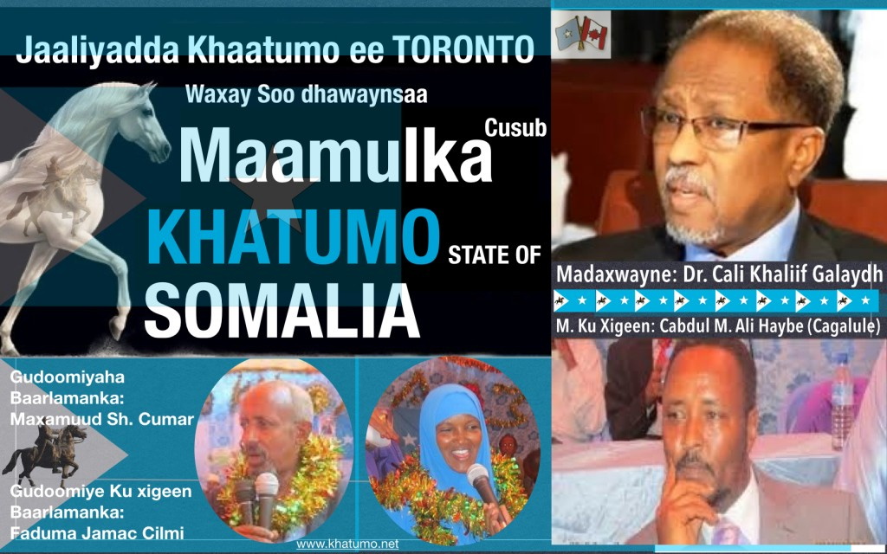

khatumo.net archive
The Inauguration of a Great Leader as the President of Khatumo State of Somalia.
Published without a byline
August 27, 2014

On Thursday, August 28, 2014, The world will be watching the political drama unfolding at Saahdheer of Khatumo State of Somalia as thousands of Khatumites and distinguished delegates comprising of traditional leaders, politicians and intellectuals from various parts of Somalia gather to bear witness to the historic inauguration of Professor Ali Khalif Galaydh as the first democratically elected president of Khatumo State of Somalia.It is an important day as we celebrate a historic turning point of our struggle for freedom and human dignity. It is not important only because it signals a new era of self-determination for the people of SSC regions of Khatumo State, but it signifies the day we moved from transitional to a permanent, democratic and popular government. It is a worthy day to celebrate for the peaceful, orderly and democratic transfer of power from the incumbent administration to the incoming one.
A little more than three years ago, the Khatumites have launched their first Consultative Conference in London-UK which set out the unprecedented task to liberate the SSC regions from Isaq colonialism and “To insist on the in alienable right of the SSC people for self-determination, to resist occupation, and to come up a visible plan to achieve the liberation of SSC territory”.
Since the Consultative Conference in April 21-23, 2011, the path for Khatumo liberation has taken twists and turns and ups and downs. Like any other liberation movements in history, it had its successes and setbacks. But the profound desire of Khatumites for freedom and dignity has inspired and boosted the energy and momentum to confront the challenges and the setbacks. Because of ALLAH’S wishes and the leadership of remarkable people with the support of relentless and genuine khatumites around the globe, the arduous path of the struggle have eventually bared success.
Today’s inauguration of Dr. Ali Khalif Galaydh as the president of Khatumo State of Somalia has special significance for all Khatumites as it marks the realization of the guiding principles of the Consultative Conference in London-UK in April 2011 and the decisive victory of the SSC people over their enemies and colonial domination of the Isaq clan. As Khatumites were organising their momentous celebration of this historic victory, the enemies were troubled and tormented by their losses as it demonstrates the beginning of the end of their oppression against the SSC people of Khatumo State of Somalia.
It is worth noting in connection with the historic journey of the struggle of the Khatumites for freedom and human dignity to acknowledge and recognize the roles of the great leaders who tirelessly and unshakably led our way to victory. The Khatumites are very fortunate to have produced leaders of highest caliber, talents and integrity.
Although each of the pioneers(the G6 and later G11) have made tremendous contributions to the struggle in his own way, our new president Dr. Ali Khalif Galaydh stands-out as an unwavering challenger to face the hardships and dangers of the harsh social environments and political realities on the ground. He walked the extra mile and crisscrossed almost the entire territory of the SSC regions to unite the rank and file of the people under the principle of democracy, freedom and human dignity. He reached out to so many people and left a remarkable footprint and enduring impact on the lives of the people.
His extraordinary bravery and dedication to the cause earned him the honor, respect and the trust of all Khatumites for which he is rewarded to get the majority votes of the Khatumo Parliament to become the new President of Khatumo State of Somalia. There is something extraordinary and exceptional about his dedication, something that makes him stand out against all others and against all odds. The symbolism surrounding Dr. Ali Khalif’s rise to power is apparently depicted at every turn of Khatumo’s struggle in search for freedom and self-determination. During the last three years of his political activity in the SSC regions, he played a mammoth role in every key moment in the history of our freedom movement which proves the indomitable strength of his personality and heroism.
In the final analysis, it is not only that we are celebrating for the inauguration of the new president Dr. Ali Khalif Galaydh. We are also celebrating for the groundbreaking milestone that signifies the success of the SSC people of Khatumo over the enemy machinations and brutal oppression. Today, the Khatumo people should acknowledge where we are in the history of our political, economic and social development at this given moment and plan the ways and means to accomplish huge strides of progress in a relatively short time in order to catch up with years of underdevelopment imposed by the enemy. The massive tasks ahead can only be realized with the united commitment of all Khatumites where everyone plays his/her roles positively and contributes for the economic and social development and to improve the lives of the Khatumo State citizens. This is a responsibility we all share as Khatumites in our individual capacities, as families and as communities in Khatumo, in Somalia and around the globe.
Let us congratulate heartily, our newly-elected President, his excellency Dr. Ali Khalif Galaydh, his Vice President, Honorable Abdulle Mohamud Ali Haybe , the newly elected Speaker of the House, Honorable Mohamoud Sheek Omar Hassan and the members of Khatumo Parliament that were sworn in to protect and pursue the sacred interests and goals of Khatumo people and government.
Khatumo Forum for Peace, Unity and Development